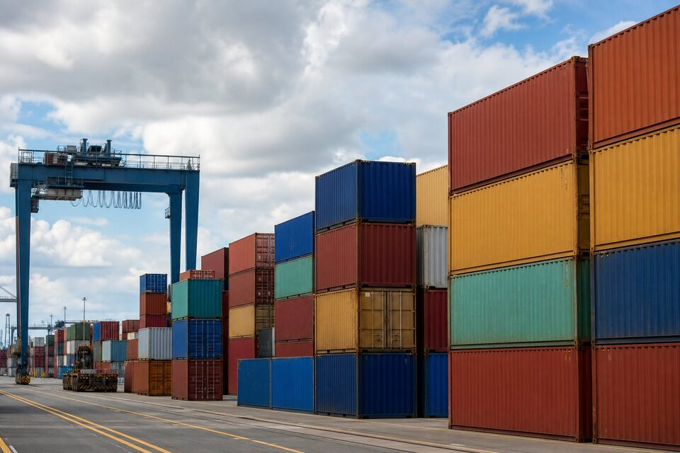

تصویر کلی فرایند ترخیص
ترخیص یک کالا در واقع زنجیرهای از مجوزها و تشریفات است که اغلب قبل از رسیدن کالا به مرز شروع میشود. در خرید صنعتی، خریدار ابتدا مجوزهای ثبت سفارش را بر اساس کالای انتخابی اخذ میکند، سپس مسیر پرداخت و تخصیص ارز را با بانک هماهنگ مینماید و پس از حمل، مدارک حمل باید در اختیار کارگزار گمرکی قرار گیرد تا اظهار انجام شود. پس از اظهار، کالا مسیر سبز، زرد یا قرمز را طی میکند که تعیینکننده سطح بررسی است؛ ارزیابی فیزیکی یا اسنادی، تعیین ارزش و در نهایت پرداخت حقوق و عوارض گمرکی. هر حلقه این زنجیره که ناقص باشد، کالای شما در انبار میماند و هزینههای انبارداری و دموراژ جمع میشود؛ بنابراین ترخیص موفق یک فرایند برنامهریزیشده است نه یک اتفاق در لحظه ورود کالا.

کد تعرفه: نقطه شروع همه چیز
کد تعرفه یا (HS) یک شناسه بینالمللی برای طبقهبندی کالا است که شش رقم اول آن در همه کشورها یکسان است و ارقام تکمیلی بعدی، ضوابط داخلی را اعمال میکنند. این کد سه چیز را تعیین میکند: نرخ حقوق و عوارض ورودی، مجوزهای لازم مانند استانداردهای اجباری یا مجوزهای خاص صنعتی و آمار تجاری کشور. انتخاب نادرست کد، یکی از پرهزینهترین خطاهای ترخیص است؛ گاهی به پرداخت مابهالتفاوت و جریمه منجر میشود و گاهی توقف کالا به دلیل نیاز به مجوزی که از ابتدا دیده نشده بود. در کالاهای تخصصی صنعتی که توصیف فنی پیچیده دارند، تعیین کد باید قبل از ثبت سفارش و با مشورت کارشناس انجام شود و حتی الامکان با استعلام از مراجع ذیربط مستند گردد.
مدارک حمل و تجاری
- بارنامه: سند حمل و مالکیت کالا؛ دقت در مشخصات فرستنده، گیرنده و توصیف کالا.
- فاکتور تجاری: مبلغ، ارز، شرایط اینکوترمز و مشخصات کامل طرفین.
- پکینگ لیست: جزئیات بستهبندی برای کنترل فیزیکی و انبارداری.
- گواهی مبدا: برای استفاده از ترجیحات تعرفهای و الزامات مجوزی.
- مجوزهای خاص: استاندارد اجباری، مجوزهای بهداشتی یا صنعتی متناسب کالا.
- گواهی بازرسی در صورت الزام روش پرداخت یا ضوابط پروژه.
نکته مهم، تطابق کامل اطلاعات این مدارک با یکدیگر است: نام کالا، تعداد، وزن و مشخصات فرستنده و گیرنده باید در بارنامه، فاکتور و پکینگ لیست یکسان باشند. مغایرتهای کوچک، حتی یک اختلاف املایی در نام شرکت، میتوانند توقف و هزینه اصلاح ایجاد کنند. در خریدهای صنعتی، مدارک متریال و فنی مانند گواهیهای (EN 10204) نیز باید از ابتدا در قرارداد دیده شوند، چون در بازرسیهای بعدی پروژه به آنها نیاز خواهید داشت و اخذ آنها پس از ترخیص از فروشنده دشوارتر است.
ارز، پرداخت و هزینههای پنهان
در خریدهای وارداتی، مسیر ارز به اندازه خود کالا اهمیت دارد: روش پرداخت باید با ضوابط جاری بانک مرکزی و سامانههای تجاری هماهنگ باشد و تخصیص به موقع، پیششرط ترخیص است. تاخیر در تخصیص یا تغییر ضوابط ارزی، یکی از علل رایج توقف کالا در گمرک است و باید در برنامه زمانبندی پروژه لحاظ شود. در کنار حقوق گمرکی، هزینههای جانبی مانند انبارداری، دموراژ کانتینر، حمل داخلی و کارمزد کارگزاری را نیز در بودجه ترخیص ببینید؛ این هزینهها در تاخیرهای طولانی میتوانند قابل توجه شوند. برای کالاهای حجیم یا پروژهای، مذاکره مهلتهای مناسب با خط کشتیری و برنامهریزی خروج سریع، صرفهجویی ملموسی ایجاد میکند.
چکلیست ترخیص بدون تاخیر
قبل از حمل، کد تعرفه را نهایی و مجوزها را اخذ کنید و مسیر ارز را مشخص نمایید. در زمان حمل، مدارک را قبل از رسیدن کالا بازبینی و مغایرتها را رفع کنید. با ورود کالا، اظهار را بدون تاخیر ثبت و پیگیری مسیر ارزیابی را به کارگزار باتجربه بسپارید. پس از پرداخت، هماهنگی حمل داخلی و تخلیه را قبل از صدور مجوز خروج انجام دهید تا بلافاصله پس از ترخیص، کالا به مقصد برود. در پروژههای بزرگ، یک جدول ردیابی برای هر محموله شامل وضعیت مجوز، ارز، اظهار و پرداخت نگهداری کنید تا وضعیت هر قلم شفاف باشد و گلوگاهها زود شناسایی شوند.
نقش کارگزار گمرکی
در بیشتر ترخیصهای صنعتی، کارگزار گمرکی باتجربه نقش تعیینکنندهای دارد. کارگزار با رویههای جاری سامانهها، تعرفهها و مقرروزهای گمرک مربوطه آشناست و میتواند اظهار را بدون آزمون و خطا ثبت کند، مسیر ارزیابی را پیگیری نماید و مشکلات مدارک را قبل از تبدیل شدن به توقف حل کند. در انتخاب کارگزار، سابقه در کالاهای مشابه صنعتی، دسترسی به دفاتر خدماتی در گمرک مربوطه و توان پاسخگویی سریع اهمیت دارند. نکته مهم، شفافیت هزینههاست: حقالعمل، هزینههای جانبی و نحوه تسویه باید از ابتدا مکتوب شود تا در پایان کار اختلافی ایجاد نشود و گزارش کاملی از هزینههای ترخیص برای بودجهبندی پروژههای بعدی در دست باشد.
جمعبندی
ترخیص موفق کالای صنعتی، نتیجه برنامهریزی از مرحله ثبت سفارش است نه اقدام در لحظه ورود. با تعیین درست کد تعرفه، تکمیل مدارک بدون مغایرت، مدیریت مسیر ارز و استفاده از کارگزار باتجربه، کالاها با کمترین توقف و هزینه به سایت پروژه میرسند و برنامه زمانبندی خرید محافظت میشود.
سوالات رایج
کد تعرفه چیست و چرا مهم است؟
کدی بینالمللی برای طبقهبندی کالا که نرخ حقوق گمرکی، مجوزهای لازم و آمار تجاری بر اساس آن تعیین میشود؛ انتخاب نادرست آن میتواند به جریمه یا توقف کالا منجر شود.
مراحل کلی ترخیص کداماند؟
ثبت سفارش و اخذ مجوزها، تخصیص و تخصیص ارز، حمل و ورود کالا، اظهار در سامانه، ارزیابی و تعیین ارزش، پرداخت حقوق و عوارض و در نهایت خروج کالا از گمرک.
کدام مدارک برای ترخیص لازم است؟
بارنامه، پکینگ لیست، فاکتور تجاری، گواهی مبدا، مجوزهای خاص کالا و در صورت نیاز گواهی بازرسی؛ ناقص بودن هر مدرک، فرایند را متوقف میکند.
چگونه از تاخیر در ترخیص جلوگیری کنیم؟
تهیه کامل مدارک قبل از رسیدن کالا، تعیین درست کد تعرفه، هماهنگی بانک و صرافی برای تخصیص ارز و انتخاب حقکار یا کارگزار باتجربه در کالاهای تخصصی.
مطالب مرتبط
هماهنگی مدارک، مجوزها و فرایند ترخیص کالاهای صنعتی مطابق ضوابط روز.
مشاهده صفحه محصول ← ثبت RFQ همین محصولتامین این تجهیزات را به پیشرو تجهیز فرتاک بسپارید
شرکت پیشرو تجهیز فرتاک تامینکننده تخصصی تجهیزات صنعتی برای پروژههای نفت، گاز، پتروشیمی، فولاد و نیروگاهی است. برای دریافت پیشنهاد فنی و قیمت، استعلام (RFQ) خود را ثبت کنید تا کارشناسان مهندسی فروش در کوتاهترین زمان پاسخ دهند.
- تامین تجهیزات صنایع نفت و گازپکیج مواد مطابق وندورلیست
- تامین تجهیزات پتروشیمیاقلام مکانیکال و ابزار دقیق